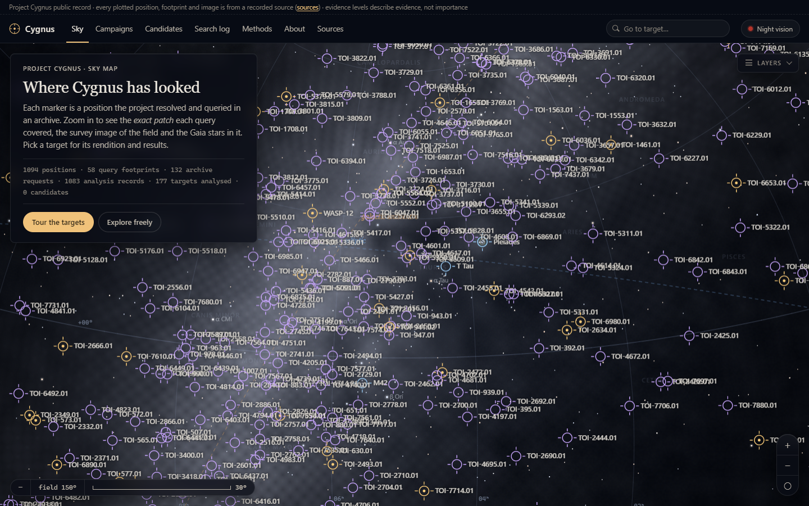

The sky, on record
Ad Astra and Cygnus, the leads that are still open, and the ones that got retracted.
Open Skymariyaholic
Mostly software, an astronomy project, and games.
Some of it is public. Most of it is still early.
See the work
Selected work
Four main projects. Pick one.

Astronomy
Ad Astra pulls from public astronomy archives. Cygnus is the part you can browse.
Other pages
Each one says what the thing is and how far along it is.
Ad Astra and Cygnus, the leads that are still open, and the ones that got retracted.
Open SkyStarfire Hearth, a cozy hard sci-fi settlement game. In development.
Open HearthEmberkind, a small game you play in one session.
Open EmberkindKurisu, Ava, and the memory and voice experiments built around them.
Open CompanionsUika, my setup for coordinating coding tools across repos.
Open ToolsTickAtlas, where market studies get published with their method.
Open AtlasAria, a dark listening UI with a cue sheet, a track card and the album art.
Open AriaThirteen small browser games and a Godot port.
Open ArcadeWhat I care about when I build things.
Open TasteFonts, sources, image credits, and what hasn't been checked yet.
Open ColophonThe world around the work
Makise Kurisu and Ava Crescentia, mostly. A lot of what I build started as wanting a bit of that sci-fi to be real.
More on that“Something decades ago would be banished within the realm of science fiction, but is now reality.”